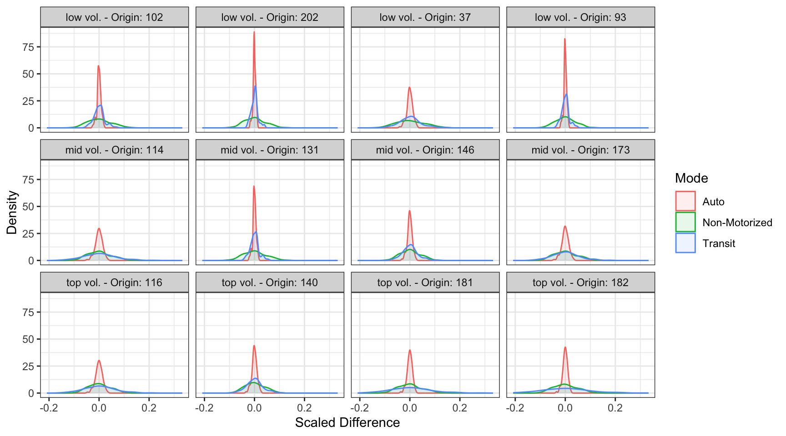
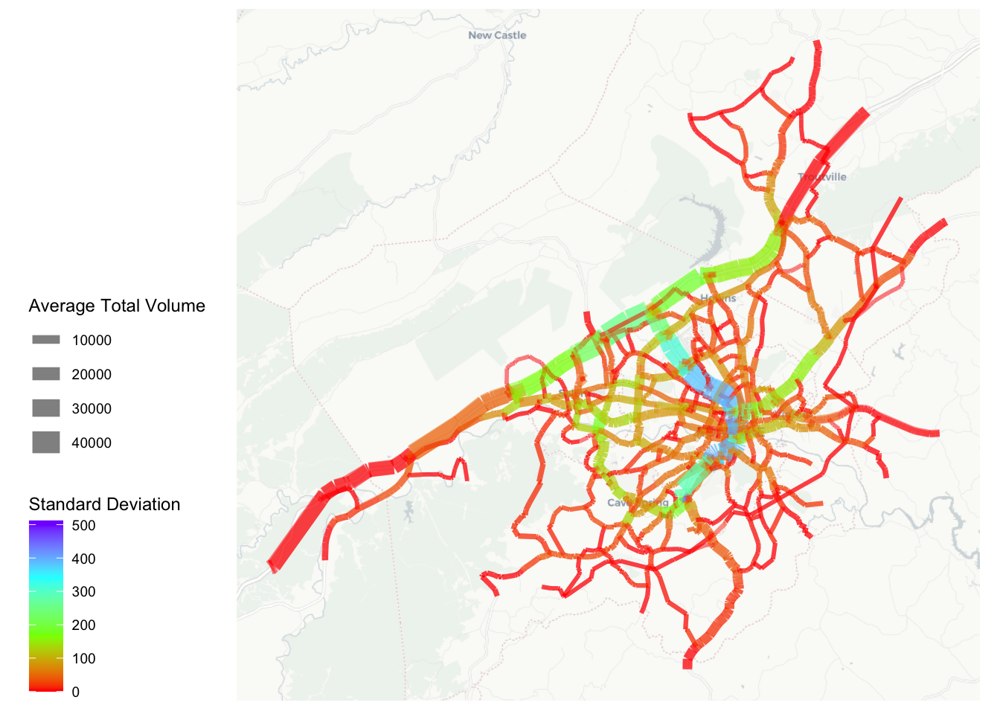
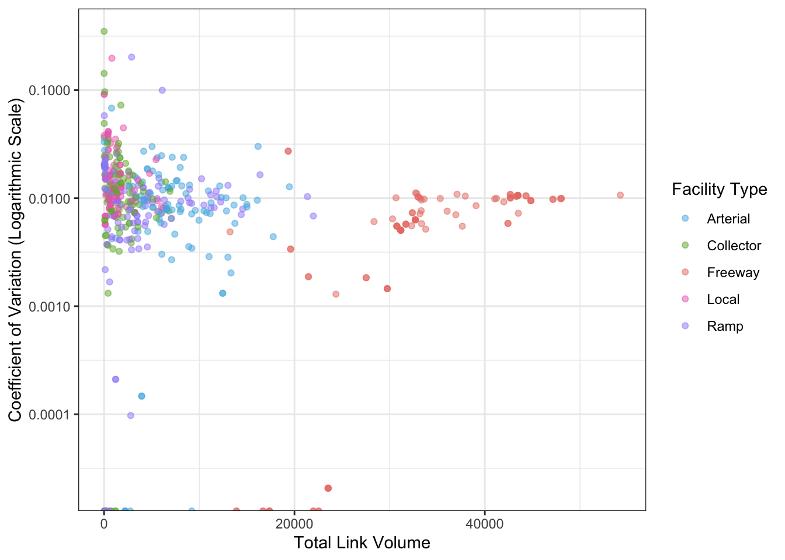
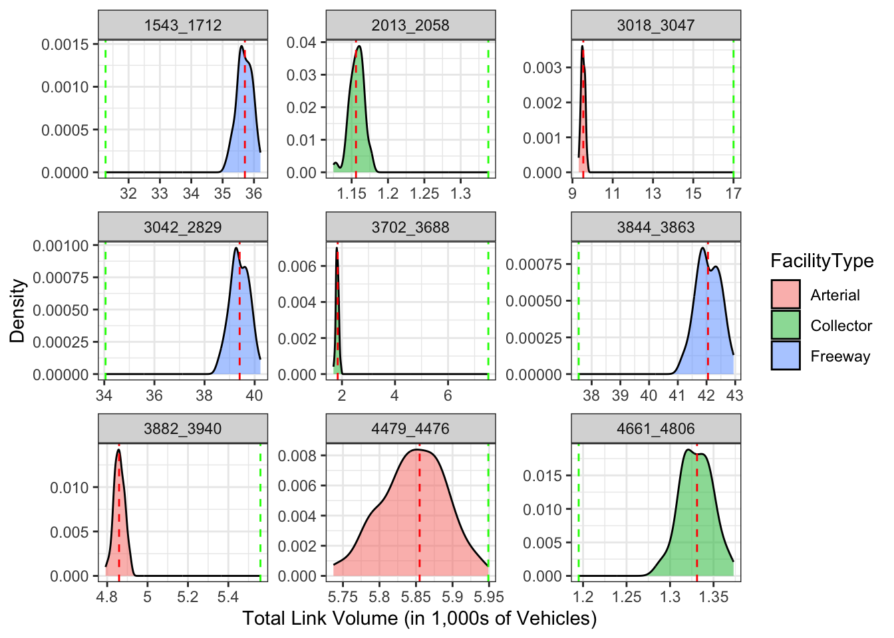

| Base | Mean | SD | $c_v$ | |
|---|---|---|---|---|
| HBW | ||||
| Auto | 103320 | 103298 | 537.07 | 0.0052 |
| Non-Motorized | 1103 | 1105 | 50.38 | 0.0456 |
| Transit | 13254 | 13274 | 566.01 | 0.0426 |
| HBO | ||||
| Auto | 250489 | 250475 | 453.11 | 0.0018 |
| Non-Motorized | 4310 | 4316 | 235.24 | 0.0545 |
| Transit | 9276 | 9283 | 363.09 | 0.0391 |
| NHB | ||||
| Auto | 60212 | 60209 | 78.28 | 0.0013 |
| Non-Motorized | 736 | 737 | 35.77 | 0.0485 |
| Transit | 1576 | 1579 | 74.89 | 0.0474 |
4 Sensitivity Analysis Results
Each of the 100 LHS parameter draws was applied to the RVTPO model, generating mode choice utilities, destination choice utilities, and trip matrices for each draw. The resulting uncertainty can then be quantified using the outputs from the trip-based model. This section will first look at the uncertainty of trips by mode, and how the mode split changes when the parameters vary. Then uncertainty will be quantified using the highway assigned trips, and how link volume changes across each draw. The results will then be summarized.
4.1 Mode Choice Trips
Uncertainty can be evaluated by looking at how mode choices change. The total number of trips by purpose are fixed, but the number of trips by each mode changes as a result of mode choice, combined with the availability of modes in the travel time skims. Table 4.1 lists the base trip amount by mode and purpose. It also lists the the average number of trips across all 100 iterations, with the corresponding standard deviation and coefficient of variation. For HBW trips there are 103,320 auto trips. Across all 100 iterations there is a mean value of 103,298 trips with a standard deviation of 527.07. This results in a coefficient of variation of 0.0052 or 0.52% variation in the number of auto trips. The other modes of transportation are included and similar patterns can be seen in HBO and NHB. The results listed in the table show that the variation of the output trips - by mode and purpose - are less than the input variation (as all \(c_v\)’s are smaller than 0.10). This confirms previous research that the outcome variance is less than or near the parameters variance (Clay & Johnston, 2005; Zhao & Kockelman, 2002). In all three purposes that were evaluated, the coefficient of variation in auto trips are lower than transit or non-motorized trips, meaning that there is greater confidence in the models accuracy to generate auto trips. The input parameter variability has a smaller effect on auto trips than on trips on the other modes.
The variation among mode choices can be visualized graphically using a density of a scaled change in trips by mode. Figure 4.1 shows density plots for HBW trips by mode for 12 zones – the zones are divided into three volume categories: low is less than 200 trips per zone, mid is 200 to 700 trips per zone, and top is greater than 700 trips per zone – and four zones are randomly selected from each volume category. Zones that do not have any transit accessibility have been excluded. Those zones have very high density in auto trips as with the ability to choose transit was removed, the choice to choose auto was more certain. The zones included in Figure 4.1 all have greater certainty in auto trips, as the change in trips across all 100 iterations is relatively small. This reinforces the previous claim that the model has more confidence in auto trips than the other modes. It is also important to note that the modes are correlated to each other. In zones with a greater confidence in one mode, the other modes are more confident as well. Since the number of trips by origin zone are held constant, when there are an increase in trips on one mode there must be a decrease in trips on one or both of the other modes. Also, the distribution of non-motorized trips is similar for every zone suggesting that generally, the most variable mode is non-motorized trips which you can see in the spread of the graphic. This is also verified using Table 4.1 as the \(c_v\) is largest for the non-motorized mode across all three purposes.

4.2 Link Volume
Highway volumes are the most commonly used output of a travel model. Uncertainty can additionally be evaluated by looking at how assigned link volume varies across iterations. Figure 4.2 displays variation in forecast link volume spatially. This shows that the links with the highest standard deviation in forecast volume are high-volume roads including freeways and principal arterials where the majority of traffic is internal to the study region. Although these links have the largest standard deviation, when compared to the total volume of the road, the variation is in reality very small. A standard deviation of 400 vehicles on a road with 40,000 total vehicles corresponds to a small variation (1%).

The highway assignment results can be grouped by facility type to show how the coefficient of variation compares to link volume. Figure 4.3 shows the coefficient of variation for the daily volume assigned to each network link, across the 100 draws, plotted against the mean forecast link volume for each link. The values are the volume for 100 randomly sampled links for each facility type. The plots shows that for the high-volume roads such as major arterials and freeways, the coefficient of variation converges to approximately 0.01, or about 1% of the road’s total forecast volume. For lower-volume links, the coefficient of variation is more widely distributed, with some local roads and small collectors having considerably higher values. Some links in the model show no variation at all; these are presumably links near the edges of the model region where the only traffic is to and from external zones, trips which were held constant in this framework.

Variation among a link can also be visualized with a density plot of the total volume across all iterations, as shown in Figure 4.4. In this plot, the density of forecast volumes in three randomly selected links in each of the freeway, collector, and arterial functional types are plotted alongside the baseline forecast and the Average Annual Weekday Daily Traffic (AAWDT) measured by the Virginia Department of Transportation, and to which the model estimates were calibrated. In all cases, the error or uncertainty in the forecast is considerably narrower than the error inherent in the model construction, as evidenced by the fact that the AAWDT target value is well outside the bell curve created by the statistically varied simulation forecasts.
As expected from using the base parameter values as the mean of the LHS parameter sampling, the base results are at or near the median of the statistical density for each link’s volume. But it is notable that the estimated volumes are not perfectly, normally distributed as might be naively expected. In this case, the combined effects of the mode and destination choice parameter sampling appear to be constrained by the geographic specificity of the RVTPO model network: even when the demand for trips changes between zone pairs, the realities of the highway capacity, volume-delay, and static user equilibrium procedures may be limiting the possibilities for forecast highway volumes.
